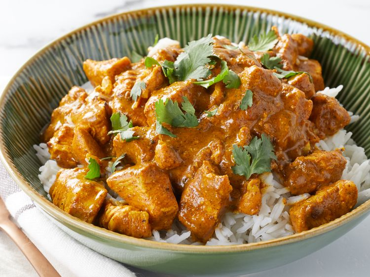
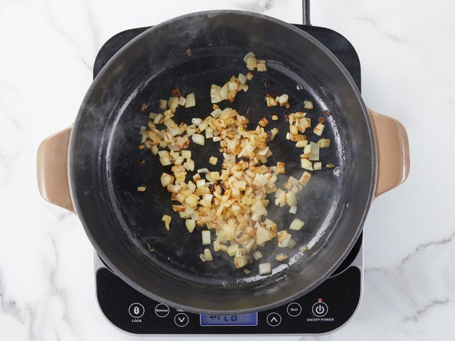
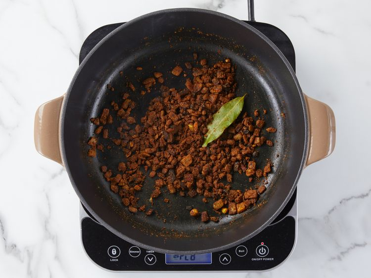
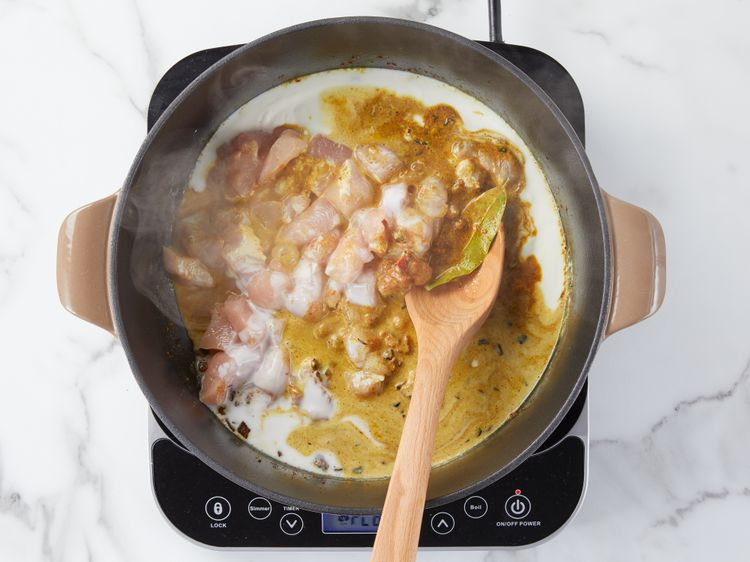
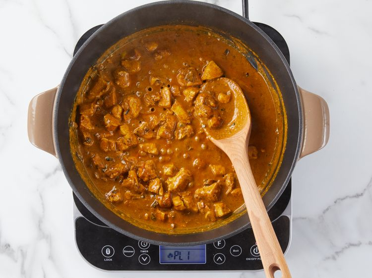

Prep Time 20 mins
Cook Time 25 mins
Total Time 45 mins
Servings 4
Chicken curry from the Indian subcontinent typically features chicken stewed in a tomato-based sauce seasoned with aromatic spices.This recipe, like many others, calls for curry powder (a spice blend made with coriander, turmeric, cumin, and chili powder).
Heat olive oil in a skillet over medium heat. Sauté onion until lightly browned.

Stir in garlic, curry powder, cinnamon, paprika, bay leaf, ginger, sugar, and salt. Continue stirring for 2 minutes.

Add chicken pieces, tomato paste, yogurt, and coconut milk. Bring to a boil, reduce heat, and simmer for 20 to 25 minutes.

Remove bay leaf, and stir in lemon juice and cayenne pepper. Simmer 5 more minutes.

Serve hot and enjoy!